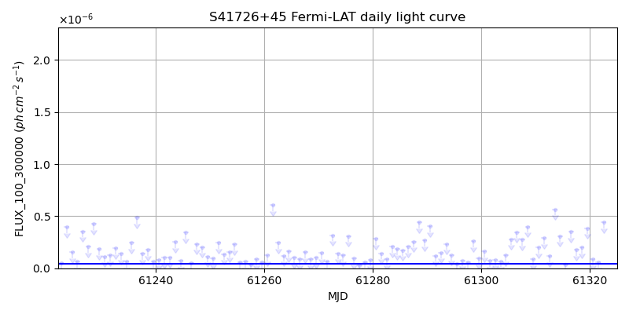
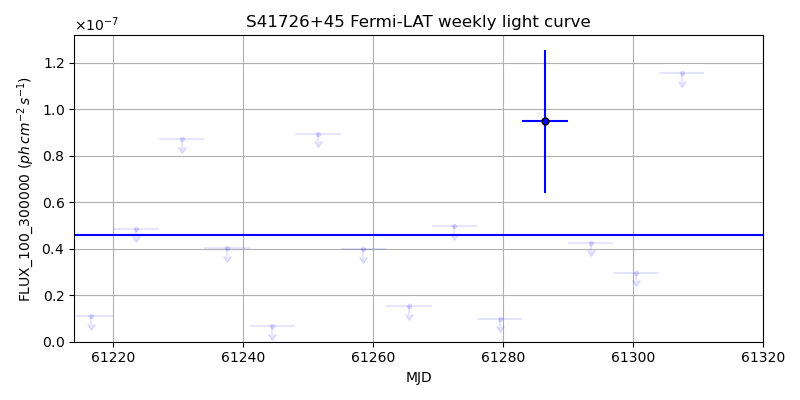
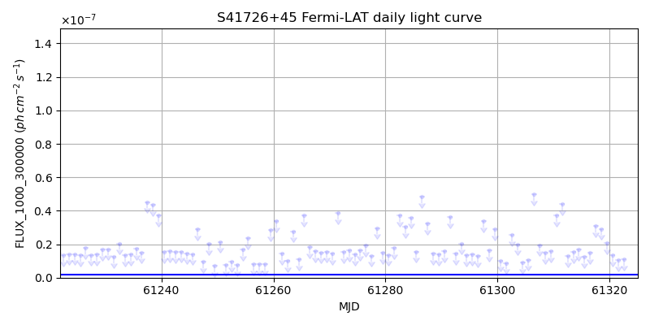
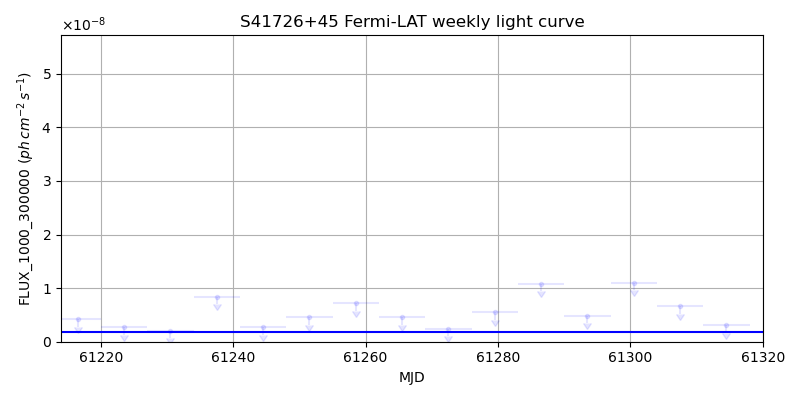

LAT Lightcurve site: https://fermi.gsfc.nasa.gov/ssc/data/access/lat/msl_lc/source/S4_1726p45
NED: Query
Time of last update of this page: UT: 2026-10-10 15:24 (MJD: 61323.642)
| Property | Value |
|---|---|
| R.A. | 17:27:27.60 |
| Dec. | 45:30:39.6 |
| z | 0.717 |
| 3FGL SpectrumType | LogParabola |
| 3FGL PL Index | |
| 3FGL Flux_100_300000 | 4.61e-08 1 / (s cm2) |
| 3FGL Flux_1000_300000 | 1.76e-09 1 / (s cm2) |
| 3FGL Flux >200 GeV | 1.04e-13 1 / (s cm2) |
| 3FGL Extrap. Crab >200 GeV | 0.00 |
| 3FGL Flux After EBL Absorption >200GeV | 8.07e-15 1 / (s cm2) |
| 3FGL EBL Crab Fraction >200GeV | 0.00 |

| MJD | dMJD | Flux | dFlux | Frac3FGL | FracCrab>200GeV | EBLFracCrab>200GeV |
|---|---|---|---|---|---|---|
| 61318.50 | 0.50 | 2.02e-07 | 0.00e+00 | 0.00 | 0.00 | 0.00 |
| 61319.50 | 0.50 | 3.84e-07 | 0.00e+00 | 0.00 | 0.00 | 0.00 |
| 61320.50 | 0.50 | 8.82e-08 | 0.00e+00 | 0.00 | 0.00 | 0.00 |
| 61321.50 | 0.50 | 5.98e-08 | 0.00e+00 | 0.00 | 0.00 | 0.00 |
| 61322.50 | 0.50 | 4.42e-07 | 0.00e+00 | 0.00 | 0.00 | 0.00 |

| MJD | dMJD | Flux | dFlux | Frac3FGL | FracCrab>200GeV | EBLFracCrab>200GeV |
|---|---|---|---|---|---|---|
| 61286.50 | 3.50 | 9.48e-08 | 3.07e-08 | 2.06 | 0.00 | 0.00 |
| 61293.50 | 3.50 | 4.26e-08 | 0.00e+00 | 0.00 | 0.00 | 0.00 |
| 61300.50 | 3.50 | 2.97e-08 | 0.00e+00 | 0.00 | 0.00 | 0.00 |
| 61307.50 | 3.50 | 1.16e-07 | 0.00e+00 | 0.00 | 0.00 | 0.00 |
| 61314.50 | 3.50 | 1.82e-07 | 0.00e+00 | 0.00 | 0.00 | 0.00 |

| MJD | dMJD | Flux | dFlux | Frac3FGL | FracCrab>200GeV | EBLFracCrab>200GeV |
|---|---|---|---|---|---|---|
| 61318.50 | 0.50 | 2.92e-08 | 0.00e+00 | 0.00 | 0.00 | 0.00 |
| 61319.50 | 0.50 | 2.08e-08 | 0.00e+00 | 0.00 | 0.00 | 0.00 |
| 61320.50 | 0.50 | 1.34e-08 | 0.00e+00 | 0.00 | 0.00 | 0.00 |
| 61321.50 | 0.50 | 1.05e-08 | 0.00e+00 | 0.00 | 0.00 | 0.00 |
| 61322.50 | 0.50 | 1.08e-08 | 0.00e+00 | 0.00 | 0.00 | 0.00 |

| MJD | dMJD | Flux | dFlux | Frac3FGL | FracCrab>200GeV | EBLFracCrab>200GeV |
|---|---|---|---|---|---|---|
| 61286.50 | 3.50 | 1.09e-08 | 0.00e+00 | 0.00 | 0.00 | 0.00 |
| 61293.50 | 3.50 | 4.87e-09 | 0.00e+00 | 0.00 | 0.00 | 0.00 |
| 61300.50 | 3.50 | 1.10e-08 | 0.00e+00 | 0.00 | 0.00 | 0.00 |
| 61307.50 | 3.50 | 6.61e-09 | 0.00e+00 | 0.00 | 0.00 | 0.00 |
| 61314.50 | 3.50 | 3.04e-09 | 0.00e+00 | 0.00 | 0.00 | 0.00 |
--------------------------------------------------------- Using user-supplied coords: 17:27:27.60 45:30:39.6 2000 --------------------------------------------------------- FLWO UT night of: 2026-10-11 Local Sid. @ Midnight: 00:55 Sunset (-15.0) (local, UT): 19:04 02:04 Sunrise (-15.0) (local, UT): 05:18 12:18 Moonrise (local, UT): Moonset (local, UT): Moon phase: 0.01 --------------------------------------------------------- AzTime LSID UT Obj_el Obj_az Mn_el Mn_az Sep. --------------------------------------------------------- 19:04 19:58 02:04 57.9 306.4 -16.1 264.2 81.7 19:34 20:29 02:34 52.6 304.9 -22.3 267.8 81.6 20:04 20:59 03:04 47.4 304.5 -28.5 271.5 81.5 20:34 21:29 03:34 42.1 304.9 -34.7 275.4 81.4 21:04 21:59 04:04 36.9 305.8 -40.8 279.7 81.3 21:34 22:29 04:34 31.8 307.1 -46.8 284.6 81.1 22:04 22:59 05:04 26.7 308.9 -52.7 290.5 81.0 22:34 23:29 05:34 21.8 311.0 -58.4 297.7 80.9 23:04 23:59 06:04 17.1 313.4 -63.6 307.3 80.8 23:34 00:29 06:34 12.6 316.2 -68.1 320.3 80.6 00:04 00:59 07:04 8.3 319.3 -71.3 338.2 80.5 00:34 01:29 07:34 4.3 322.7 -72.6 0.4 80.4 01:04 01:59 08:04 0.9 326.4 -71.5 22.7 80.3 01:34 02:30 08:34 -1.7 330.5 -68.3 40.8 80.1 02:04 03:00 09:04 -5.6 334.9 -63.9 54.1 80.0 02:34 03:30 09:34 -8.3 339.6 -58.7 63.8 79.9 03:04 04:00 10:04 -10.3 344.5 -53.1 71.2 79.8 03:34 04:30 10:34 -11.7 349.7 -47.3 77.2 79.7 04:04 05:00 11:04 -12.6 355.0 -41.4 82.2 79.6 04:34 05:30 11:34 -12.8 0.4 -35.3 86.6 79.6 05:04 06:00 12:04 -12.5 5.8 -29.2 90.6 79.5 05:18 06:14 12:18 -12.1 8.2 -26.5 92.4 79.5 --------------------------------------------------------- Dark hours >55 deg.: 0.28 srcstart (UT): 2026-10-11 02:04 srcend (UT): 2026-10-11 02:20